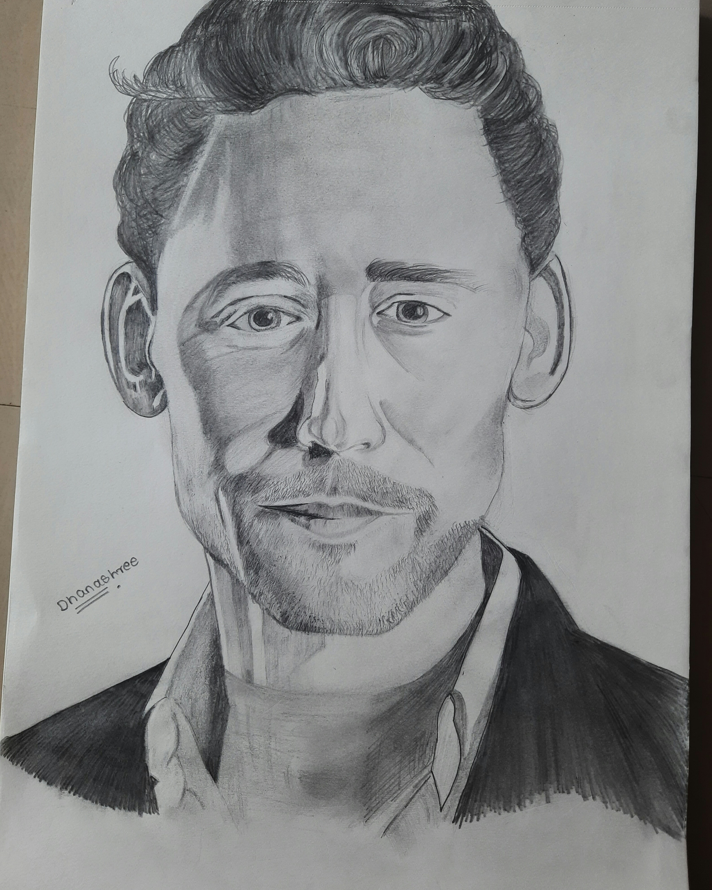
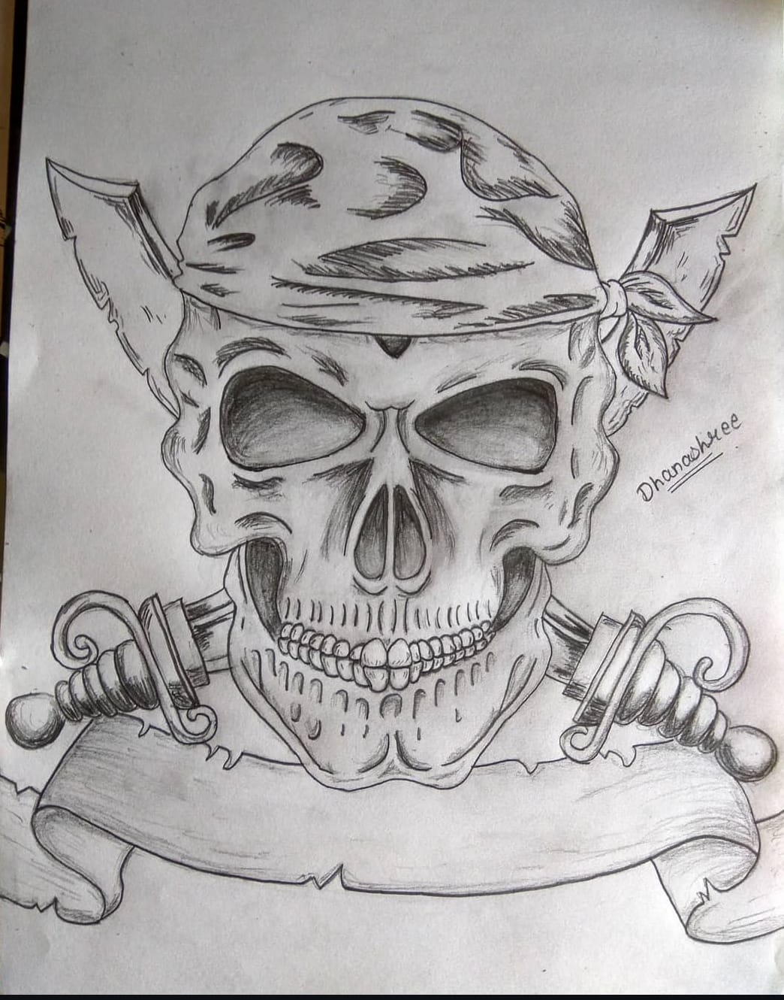
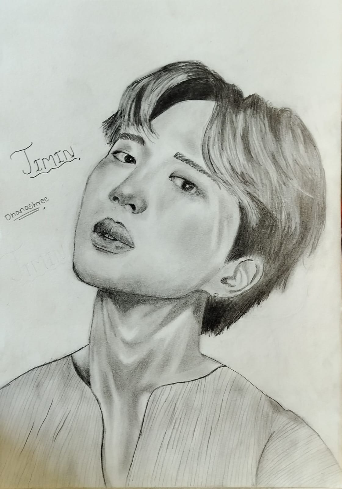
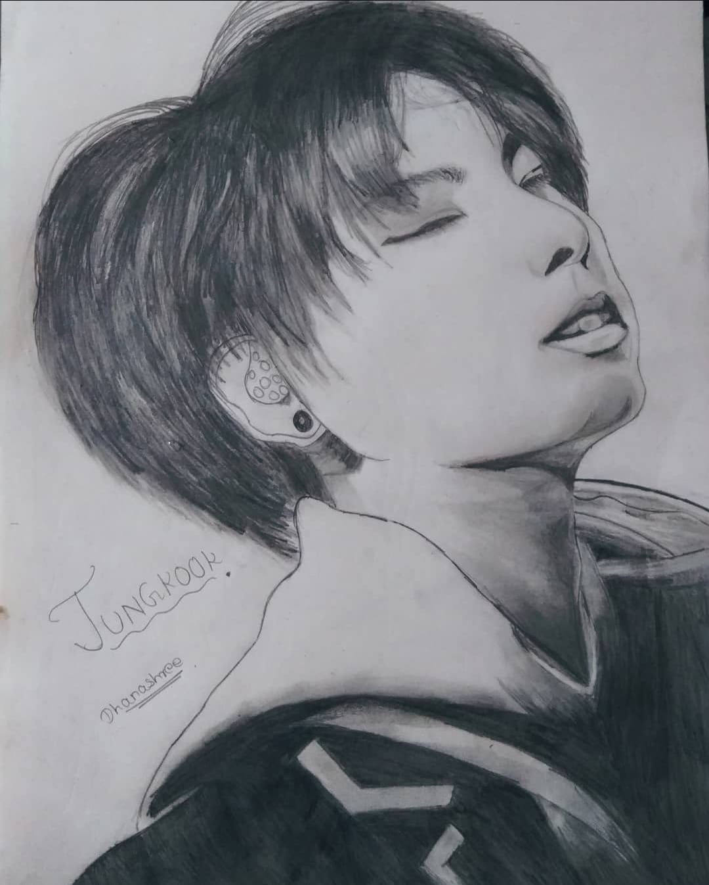
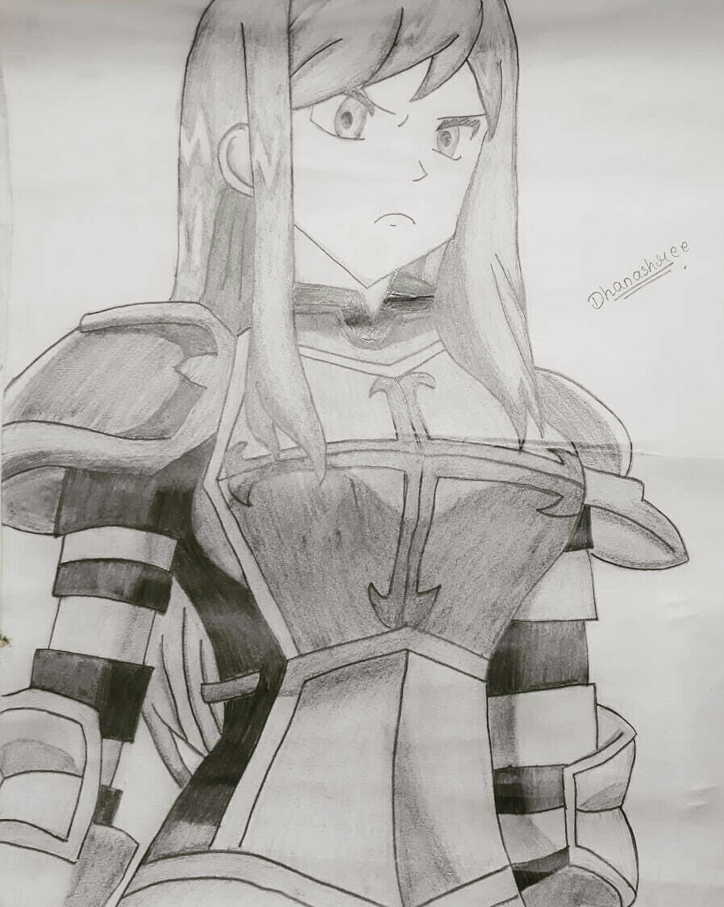
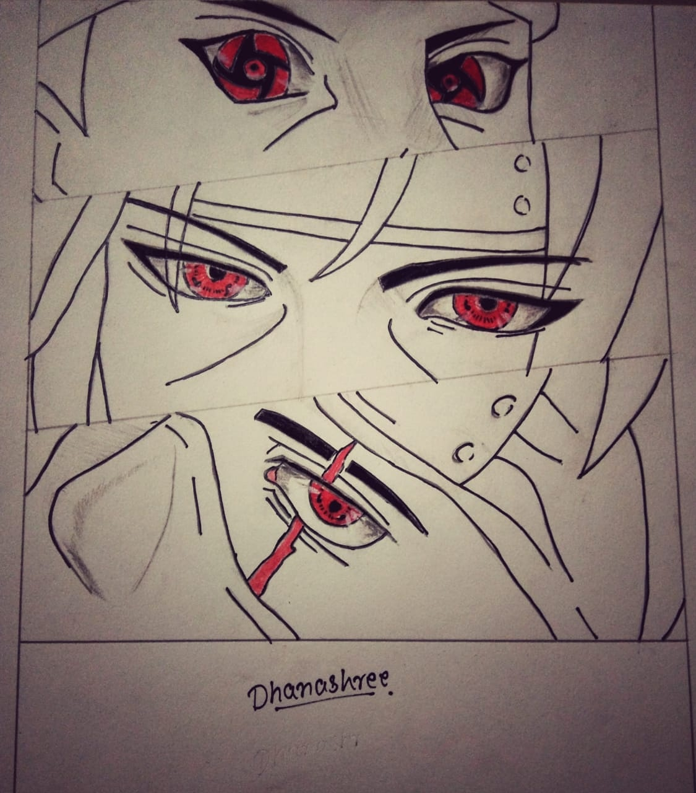
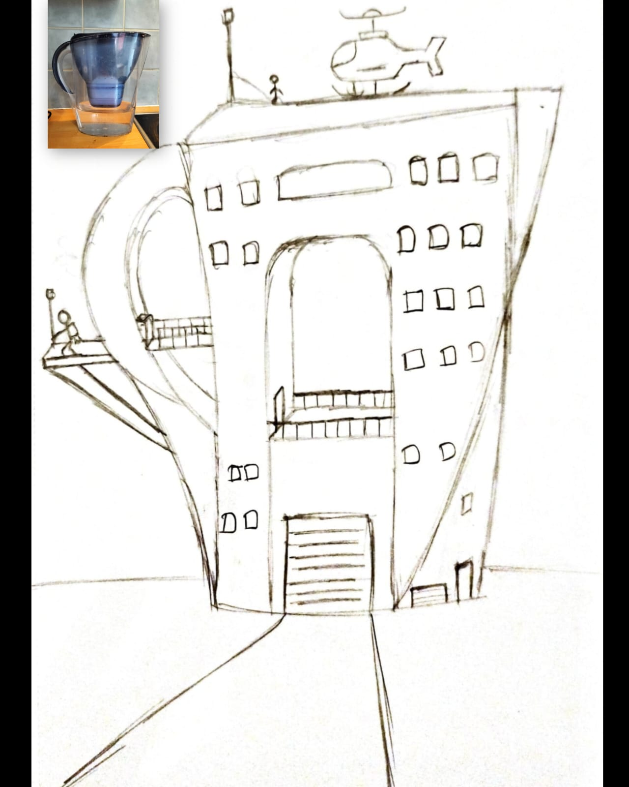

A Day in My Life
VR · Puzzle Design · Narrative Systems
A Day in My Life
Built under broken hardware — engineered a bypass system to keep testing anyway. 4.6/5 atmosphere.
TECHNICAL DESIGNER
I'm a Technical Designer with an MSc in Computer Games from Queen Mary University of London, working across Unity and Unreal Engine 5 to build gameplay systems that feel as good as they function. I build complete gameplay systems from scratch — enemy AI with finite state machines, VR interaction rigs, procedural generation, and full inventory systems in C#, and most recently a scalable scan-and-repair mechanic in UE5 Blueprints featuring dynamic hologram spawning, line trace detection, and a designer-friendly component system requiring zero repeated setup per object. What sets me apart is that I bring design thinking to every system I build: I prototype, playtest with real users, and iterate based on data. My VR puzzle game scored 4.6/5 for atmosphere. My platformer's functionality score improved from 7.31 to 8.72 through iteration. I don't just make it work — I make it feel right.
Unity · C# · C++ · VR/XR · NavMesh · Procedural Generation
Build it. Playtest it. Make it feel right.
Queen Mary University of London • 2024–2025
Specialized in narrative design, puzzle mechanics, and VR interaction. Developed a VR narrative puzzle game with Unity, C#, and Blender. Strengthened skills in prototyping, playtesting, and agile teamwork.
Tata Consultancy Services • 2022–2024
Worked with multidisciplinary teams to debug and optimize complex systems—experience directly transferable to fixing gameplay issues and improving player experience. Contributed to Agile pipelines (JIRA, Confluence, Trello), balancing priorities under tight deadlines. Produced technical documentation and collaborated across teams, sharpening communication between design and engineering. Adapted quickly to new tools (Kotlin) while strengthening structured problem-solving for live-service environments.
VIMEET • University of Mumbai • 2019–2022
Applied programming fundamentals to gameplay creation, including developing a classic Pac-Man clone in C and a 2D action game in C++. Strengthened systems thinking, debugging, and player-centric design foundations while collaborating on technical projects presented at national-level competitions.
Early Years
My journey into game design began as a player, captivated by stories, characters, and the challenges that pushed me to think differently. Soon, playing wasn't enough—I wanted to understand how games were made, to peek behind the curtain and build my own worlds. This curiosity led me from sketchbooks and experiments to programming, game engines, and eventually, full-fledged projects that turned imagination into interaction.
VR · Puzzle Design · Narrative Systems
Built under broken hardware — engineered a bypass system to keep testing anyway. 4.6/5 atmosphere.
AI · UI Systems · Playtesting · Team
Playtesters ignored the grappling hook. We redesigned around them. Score jumped 7.31 → 8.72.
Pure C++ · No Engine · Systems Design
No engine. No shortcuts. Built collision, input, and movement from scratch in C++.
Signal_lost · UE5 Blueprints · In Development
Drop any broken object into a level — it just works. Built from scratch in UE5 Blueprints.
PCG · Cellular Automata · AI Agents
Pure randomness made unplayable maps. Built a 3-stage pipeline to make chaos feel designed.
Animation, 3D modeling, and concept art showcasing creative exploration.
Blender | Hard-Surface Modeling | Texturing | Lighting | Animation | Rendering | Camera Animation
Blender | Character Modeling | Rigging | Animation | Lighting | Rendering | Camera Composition







Open to Technical Designer, Gameplay Designer and Technical Artist roles in the UK